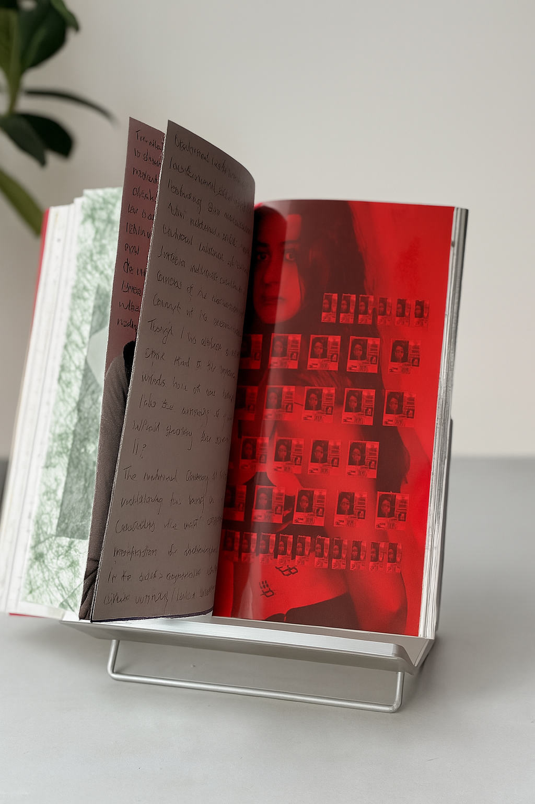
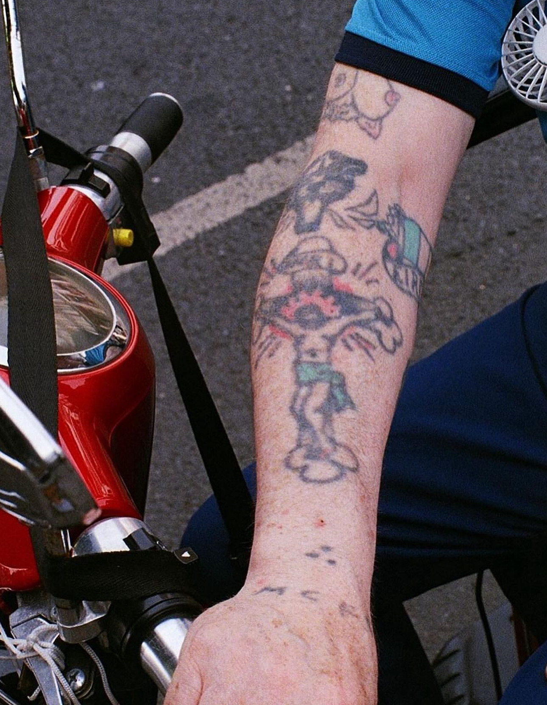

The problem
A body argument, flattened into a document.
A standard printed dissertation strips the physicality out of its subject.
‘How do tattoos aid identity formation and group solidarity?’ - written by hand, bound by hand, and made physical.
A standard printed dissertation strips the physicality out of its subject.
I wrote 25,000 words, photographed and interviewed a range of people by myself, designed the editorial language and made the publication by hand.
An editorial object, not a printout: the making is part of the argument.
Object as argumentI hand-wrote the dissertation in ink to replicate the ink used in tattooing. I used Japanese binding needles to echo the tattoo needle, so the making process physically repeats the subject of the research. The photographs and interviews were also carried out by me, keeping the body of the author and the people studied present in the final object.



